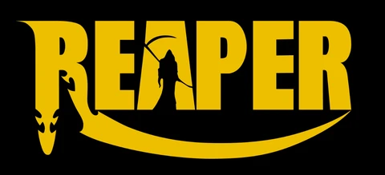
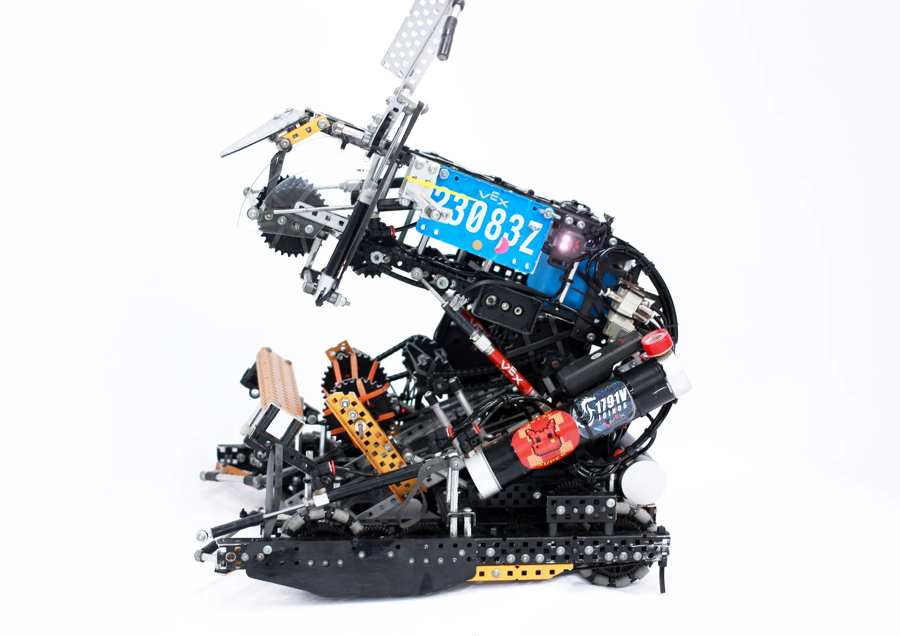
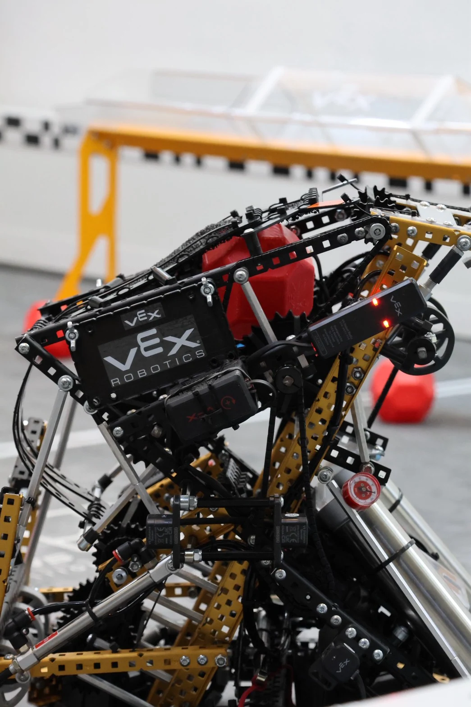
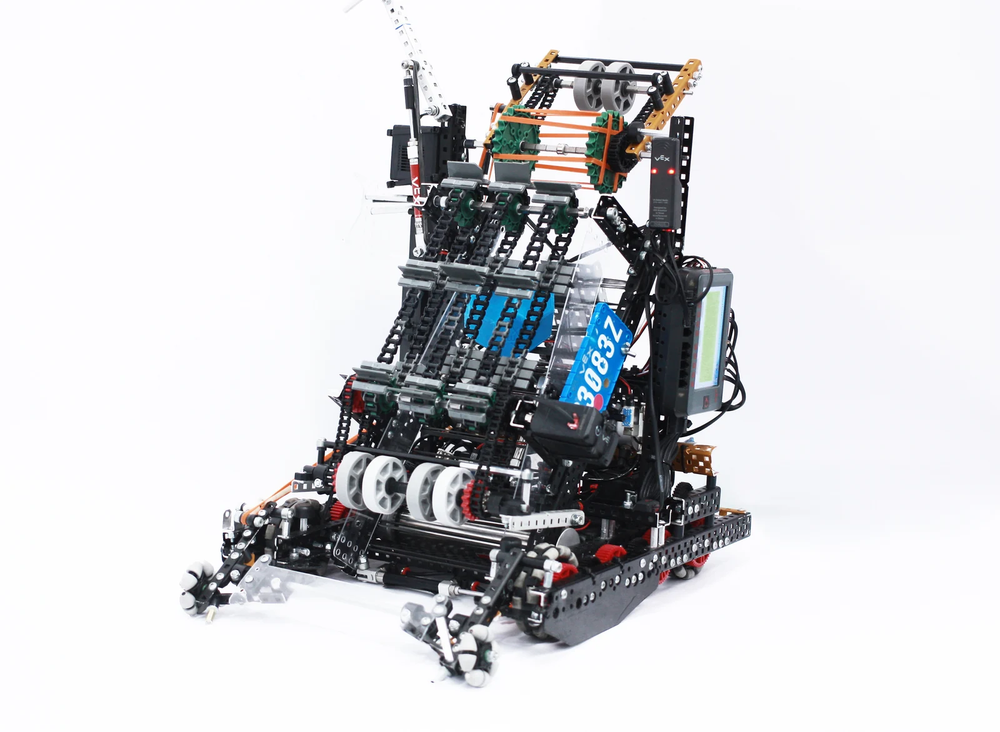
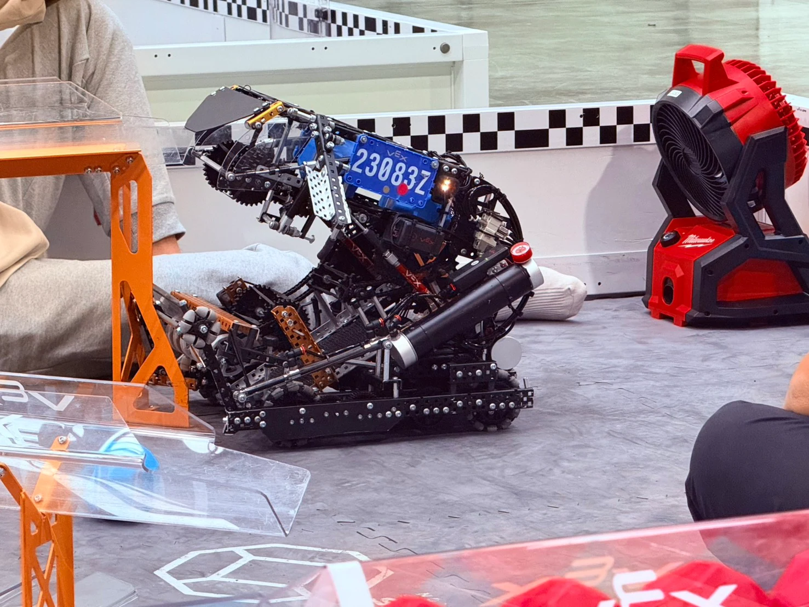
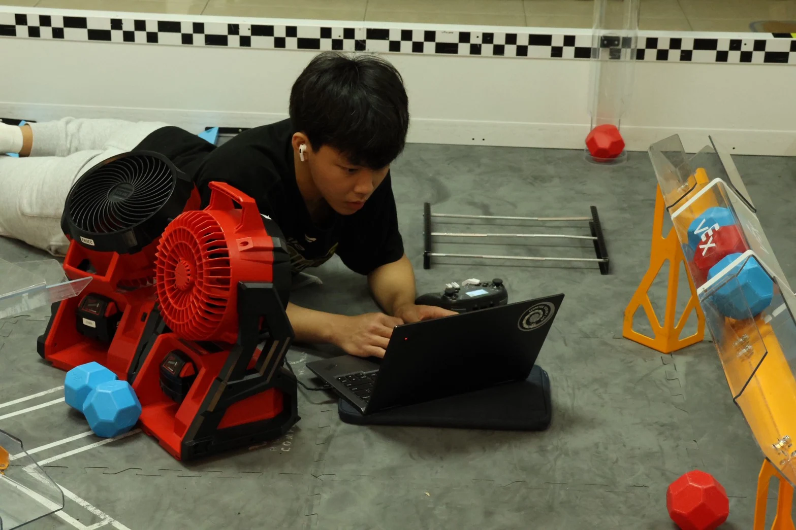
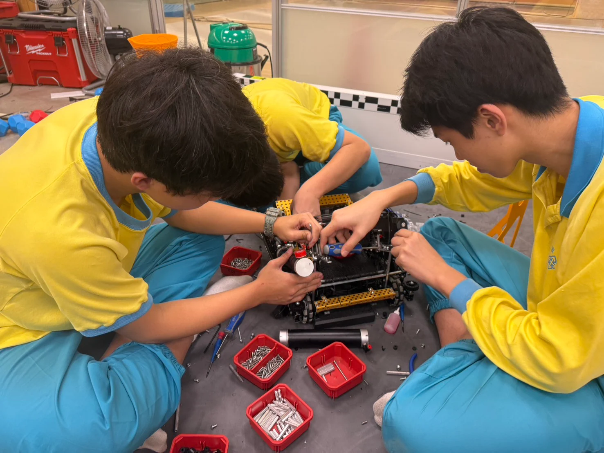
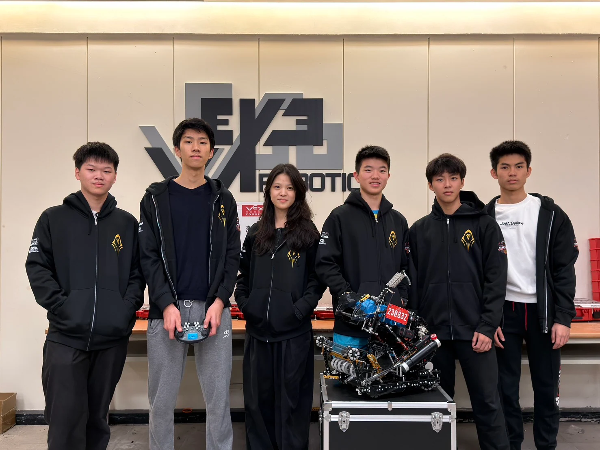
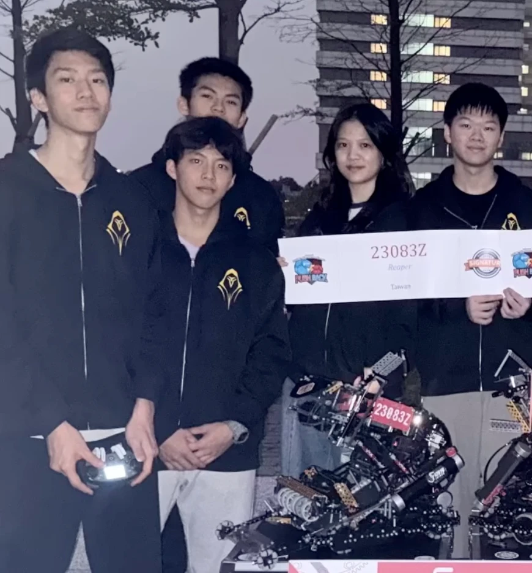
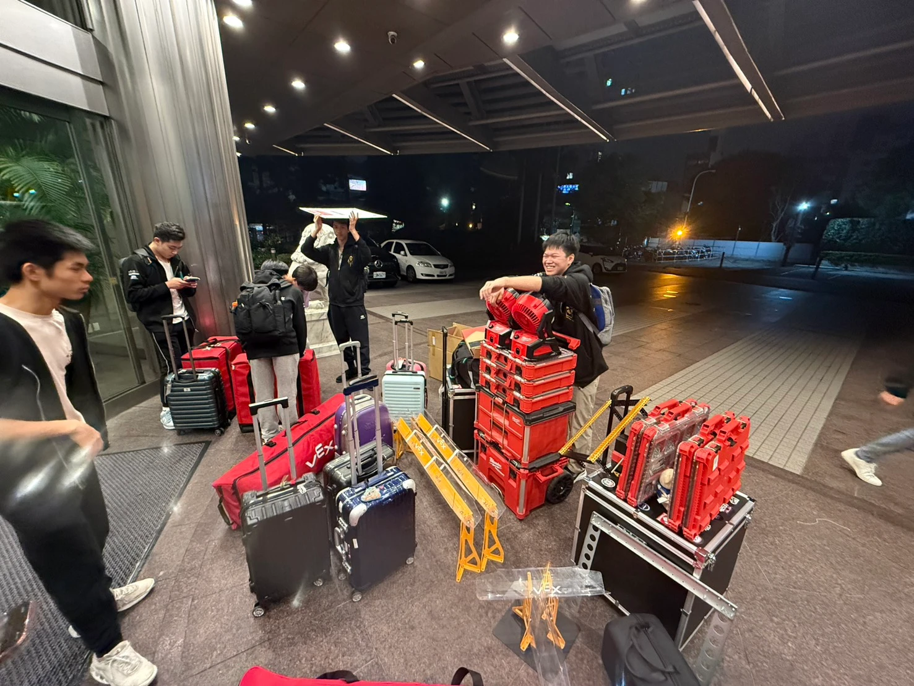

Robotics / Reaper 23083Z
One team.
Every moving part.
We build, program, break, repair, and try again.
Meet the work behind the team ↗
Reaper 23083Z / VEX Robotics01 VEX Robotics
Competition robots.
Real constraints.
These robots were built by our team. My contributions included C++ / PROS programming, debugging and fixing robot functions, and mechanism ideation. My experience includes PID, odometry, repeated testing, tuning, and the team’s mechanism assembly and modification process.
VEX taught me to consider the mechanism, code, timing, and driver needs together.
Team recognition: VEX Create Award · VEX Sportsmanship Award

02 Robot iterations / Build views
From the build archive.
These photographs document our team’s hardware. They are build views rather than a dated version history; I’ll add specific iteration notes when the sequence is confirmed.



03 Engineering process
Test the robot.
Not just the idea.

-
Program
Translate match objectives into driver-control and autonomous routines using C++ and PROS.
-
Diagnose & improve
Troubleshoot robot functions with teammates and suggest mechanism changes as design and strategy evolve.
-
Observe
Test movement and mechanism behavior together, using feedback and position estimates.
-
Tune & repeat
Refine PID, odometry, and the physical system through repeated tests.
04 My contributions
Where I contributed.

Programming & control
C++ / PROS programming, PID, odometry, and repeated tuning.
Functional troubleshooting
Debugging and fixing robot functions, contributing mechanism ideas, and testing changes with teammates.
Planning with the team
Suggesting mechanism approaches and helping improve robot functionality. Design, assembly, programming, and competition preparation were collaborative team efforts.
05 Team context / Shared work
A team robot.
A shared process.
Reaper 23083Z represents Wego High School in Taipei. Founded in 2023, the team describes experience in Over Under and High Stakes, followed by a 2025–26 Push Back season plan.
My work focused on programming, functional troubleshooting, and mechanism ideation. The robot designs, builds, and team results reflect shared work—not individual ownership of every part.
Team context adapted from 23083z.com ↗. A season plan is not evidence of completed events or results.

06 External team site
More from the team.
Explore broader team updates and activities on the original Wego Robotics site.
Visit Reaper 23083Z ↗Team Instagram ↗
Between the matches
More than the robot.

